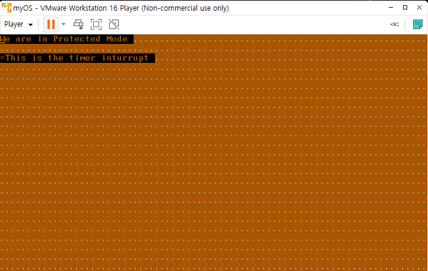
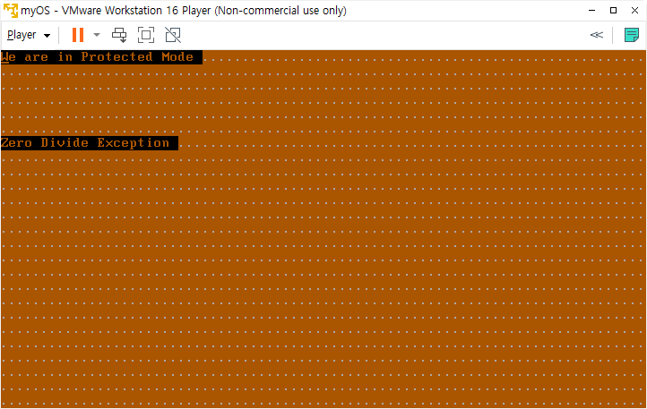

day11: 키보드 인터럽트 핸들러, exception
오늘의 결과물
- keyboard 인터럽트 핸들러 - 아무 키나 누르면 키보드 인터럽트 라는 문구가 뜸(key down, key up 두 가지 경우에 다 인터럽트 걸림)

- 예외(Exception)

zero divide Exception의 ISR(Interrupt Service Routine) 실행 중에는 다른 interrupt가 걸리지 않았습니다.
키보드 인터럽트 핸들러 코드
1 2 3 4 5 6 7 8 9 10 11 12 13 14 15 16 17 18 19 20 21 22 23 24 25 26 27 28 29 30 31 32 33 34 35 36 37 38 39 40 41 42 43 44 45 46 47 48 49 50 51 52 53 54 55 56 57 58 59 60 61 62 63 64 65 66 67 68 69 70 71 72 73 74 75 76 77 78 79 80 81 82 83 84 85 86 87 88 89 90 91 92 93 94 95 96 97 98 99 100 101 102 103 104 105 106 107 108 109 110 111 112 113 114 115 116 117 118 119 120 121 122 123 124 125 126 127 128 129 130 131 132 133 134 135 136 137 138 139 140 141 142 143 144 145 146 147 148 149 150 151 152 153 154 155 156 157 158 159 160 161 162 163 164 165 166 167 168 169 170 171 172 173 174 175 176 177 178 179 180 181 182 183 184 185 186 187 | |
설명
키보드 인터럽트 핸들러 구현을 위해서도 IDT에 디스크립터를 복사해야 합니다.
1 2 3 4 | |
idt_keyboard는 디스크립터의 포인터입니다.
1 2 3 4 5 6 | |
여기서도 인터럽트 핸들러가 있는 주소는 0x010000+isr_33_keyboard입니다.
1 2 3 4 5 6 7 8 9 10 11 12 13 14 15 16 17 18 19 20 21 22 23 24 25 26 27 | |
isr_33_keyboard 루틴에서는 키보드에서 어떤 키가 눌렸는지를 알아야 하므로, in al, 0x60 명령으로 키보드 버퍼에 있는 문자 스캔코드를 가져옵니다.
이 스캔코드는 아스키코드와는 다릅니다.그리고 버퍼에서 문자를 가져오지 않으면 키보드에서 다음 인터럽트는 발생하지 않습니다. 그래서 이 소스에서는 일단 가져오는 행동만 합니다. 그 후 PIC를 리셋합니다.
예외(Exception) 코드
예외는 오류가 발생했을 때 CPU에서 발생시키는 인터럽트의 한 종류입니다. 하지만 실제로 대부분의 경우에 page faults 처럼 오류가 아닙니다.
Exception의 종류
- Faults: 이 Exception은 고쳐질 수 있고, 프로그램은 아마도 아무 일도 일어나지 않았으면 계속 실행될 겁니다.
- Traps: Trap은 trapping instruction이 실행된 이후에 바로 보고됩니다.
- Aborts: 심각한 회복 불가능한 에러입니다.
Protected Mode에서 예외도 하드웨어 인터럽트, 소프트웨어 인터럽트와 함께 같은 IDT를 사용합니다.
0번 ~ 19번까지의 인터럽트는 예외 처리를 위해 할당되어 있으며,
20번에서 31번까지는 intel에서 예약해 둔 인터럽트입니다.
32 ~ 255까지의 주소는 유저 정의 인터럽트를 사용할 수 있습니다.
- 전체 예외 종류(https://wiki.osdev.org/Exceptions#FPU_Error_Interrupt)
| Name | Vector nr. | Type | Mnemonic | Error code? |
|---|---|---|---|---|
| Divide-by-zero Error | 0 (0x0) | Fault | #DE | No |
| Debug | 1 (0x1) | Fault/Trap | #DB | No |
| Non-maskable Interrupt | 2 (0x2) | Interrupt | - | No |
| Breakpoint | 3 (0x3) | Trap | #BP | No |
| Overflow | 4 (0x4) | Trap | #OF | No |
| Bound Range Exceeded | 5 (0x5) | Fault | #BR | No |
| Invalid Opcode | 6 (0x6) | Fault | #UD | No |
| Device Not Available | 7 (0x7) | Fault | #NM | No |
| Double Fault | 8 (0x8) | Abort | #DF | Yes (Zero) |
| ~~Coprocessor Segment Overrun~~ | 9 (0x9) | Fault | - | No |
| Invalid TSS | 10 (0xA) | Fault | #TS | Yes |
| Segment Not Present | 11 (0xB) | Fault | #NP | Yes |
| Stack-Segment Fault | 12 (0xC) | Fault | #SS | Yes |
| General Protection Fault | 13 (0xD) | Fault | #GP | Yes |
| Page Fault | 14 (0xE) | Fault | #PF | Yes |
| Reserved | 15 (0xF) | - | - | No |
| x87 Floating-Point Exception | 16 (0x10) | Fault | #MF | No |
| Alignment Check | 17 (0x11) | Fault | #AC | Yes |
| Machine Check | 18 (0x12) | Abort | #MC | No |
| SIMD Floating-Point Exception | 19 (0x13) | Fault | #XM/#XF | No |
| Virtualization Exception | 20 (0x14) | Fault | #VE | No |
| Reserved | 21-29 (0x15-0x1D) | - | - | No |
| Security Exception | 30 (0x1E) | - | #SX | Yes |
| Reserved | 31 (0x1F) | - | - | No |
| Triple Fault | - | - | - | No |
| ~~FPU Error Interrupt~~ | IRQ 13 | Interrupt | #FERR | No |
흔하게 리눅스에서 봤던 segmentation fault 는 0x0D번에 해당하는 general protection fault에 해당합니다.
segmentation fault 또는 access violation은 하드웨어의 memory protection에 의해서 일어나는 fault입니다. 하드웨어는 OS에 메모리에 접근 위반이 발생했다고 알려줍니다. x86 computer에서는 general protection fault의 하나의 형태입니다.
(https://en.wikipedia.org/wiki/Segmentation_fault)
general Protection Fault
general Protection Fault는 다양한 이유로 발생할 수 있습니다. 가장 흔한 것들은 다음과 같습니다.
- Segment error (privilege, type, limit, read/write rights).
- Executing a privileged instruction while CPL != 0.
- Writing a 1 in a reserved register field or writing invalid value combinations (e.g. CR0 with PE=0 and PG=1).
- Referencing or accessing a null-descriptor.
(https://wiki.osdev.org/Exceptions#Stack-Segment_Fault)
Legacy Exceptions
FPU Error Interrupt
예전에는 FPU(Floating Point Unit)은 별도의 칩으로 존재했고, 그 칩에서 오류가 발생하면 CPU로 오류를 알려줬어야 했습니다. 그렇기 때문에 IRQ 13번을 사용했었는데, 486부터는 embedded 되었기 때문에 더이상 IRQ 13번이 필요하지 않습니다. 호환성을 위해서만 존재합니다.
Coprocessor Segment Overrun
FPU가 processor의 외부에 있을 때, segment에서 오류가 났는지 확인을 했어야 했습니다. 486부터는 GPF(General Protection Fault) IRQ에서 처리를 합니다.
IRQ 번호 리매핑
인터럽트 0번부터 31번까지 어떻게 사용될 지 정해져 있기 때문에, 32번부터 255번 까지 쓸 수 있습니다.
만약 PIC를 프로그래밍 하지 않았다면 IRQ는 0번부터 시작합니다. 0째 IDT 디스크립터를 참조해서 해당 인터럽트 핸들러를 실행하게 되는데, 핸들러 입장에서는 이것이 하드웨어 인터럽트인지, 예외가 발생한 것인지를 모르게 됩니다.
애초에 CPU에 지정된 예외와 PC 메인보드에 PIC가 연결된 방법이 충돌나도록 디자인 되어 있기 때문입니다.
그래서 PIC에서 IRQ 번호를 리매핑 해주는 작업이 필요합니다.
Exception 코드
1 2 3 4 5 6 7 8 9 10 11 12 13 14 15 16 17 | |
1 2 3 4 5 6 7 8 9 10 11 12 13 14 15 16 17 18 19 20 21 22 23 24 25 26 27 28 29 30 31 32 33 34 35 36 37 38 39 40 41 42 43 44 45 46 47 48 49 50 51 52 53 54 55 56 57 58 59 60 61 62 63 64 65 66 67 68 69 70 71 72 73 74 75 76 77 78 79 80 81 82 83 84 85 86 87 88 89 90 91 92 93 94 95 96 97 98 99 100 101 102 103 104 105 106 107 108 109 110 111 112 113 114 115 116 117 118 119 120 121 122 123 124 125 126 127 128 129 130 131 132 133 134 135 136 137 138 139 140 141 142 143 144 145 146 147 148 149 150 151 152 153 154 155 156 157 158 159 160 161 162 163 164 165 166 167 168 169 170 171 172 173 174 175 176 177 178 179 180 181 182 183 184 185 186 187 188 189 190 191 192 193 194 195 196 197 198 199 200 201 202 203 204 205 206 207 208 209 210 211 212 213 214 215 216 217 218 219 220 221 222 223 224 225 226 227 228 229 230 231 232 233 234 235 236 237 238 239 240 241 242 243 244 245 246 | |
총 세 부분을 keyboard_interrupt 코드에서 고쳤습니다.
(추가적으로, kernel도 512바이트를 초과했기 때문에 2 섹터를 읽어오도록 변경했습니다.)
- IDT Descriptor에 idt_zero_divide 추가
1 2 3 4 5 6 | |
- idt_zero_divide IDT descriptor를 lidt 할 때 등록
1 2 3 4 | |
- ISR 루틴에 isr_zero_divide 추가
1 2 3 4 5 6 7 8 9 10 11 12 13 14 15 16 17 18 19 20 21 22 23 24 25 26 27 | |
jmp $로 그 자리에서 무한루프를 돌도록 했습니다.
- 0 / 0 연산을 해서, 인터럽트 발생시키는 부분
1 2 3 4 5 6 | |
0x100을 0으로 나누는 것을 시도합니다.
이 프로그램을 실행시키면 타이머 인터럽트 핸들러도, 키보드 인터럽트 핸들러도 작동하지 않습니다. 이유는 PIC의 마스크를 해제하고 바로 0x100 을 0으로 나누기를 시도해서 예외가 발생했고, isr_zero_divide 핸들러에서 iret 하지 않고 jmp $로 그 자리에서 무한루프를 돌기 때문입니다.
알게된 점
- PIC의 비트마스크 설정으로, interrupt 별로 enable/disable 시킬 수 있습니다.
- 하나의 interrupt로 들어갔을 때, iret을 하지 않으면 다음 인터럽트로 넘어가지 않습니다.